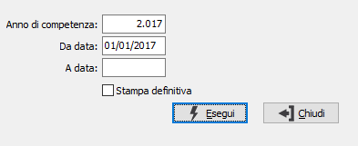

Stampa registro dichiarazioni di intento
Il programma effettua la stampa su registro bollato del registro delle dichiarazioni d’intento sia inviate ai fornitori che ricevute dai propri clienti.

ANNO DI COMPETENZA: Indica l’anno di competenza del registro che si intende stampare. Viene proposto l’anno inserito in configurazione, se non è specificato alcun dato l’anno attuale.
DA DATA: Indica la data dalla quale si desidera iniziare la stampa. Viene proposta la data di ultima stampa del registro.
A DATA: Indica la data fino alla quale si desidera effettuare la stampa.
STAMPA DEFINITIVA: definisce il tipo di stampa che si vuole effettuare: stampa di prova (casella vuota) oppure stampa definitiva (casella con segno di spunta).